内容要点
[种草R]宝子们，继续和大家聊修图技巧，带大家初步认识Lightroom，下期开始细讲每个工具的具体用法，仔仔细细地教大家怎么用。 [种草R]这软件有免费功能，也有付费的。需要全功能免费安装包的，关注➕群获取哦，开始进入正题。 ▶️功能详解： [一R]颜色工具之“分级”：这个功能可以给照片的高光、中间调、阴影、全局分别添加你喜欢的颜色（图片中本身没有的颜色），让照片更有层次感和艺术感。比如说，照片里天空是高光部分，你想让天空带点绿色，就可以在颜色工具里找到分级，在高光部分加上绿色，照片马上就变得不一样了，是不是超有意思。（图2） [二R]模糊工具：这个工具超好用啦，就是ai识别主体，让背景模糊，修出大光圈效果，直接上图吧。（图3、图4） [三R]效果和细节工具：这两个工具主要是处理照片的清晰度、细节问题，像照片模糊，有噪点，就可以用它来解决。看看图5和图6的差别是不是很明显。 [四R]光学工具：这个工具是专门为相机拍的照片准备的，它能帮我们修复镜头畸变。你可以手动选择对应相机的型号配置文件，然后调整参数，照片就变回正常形状啦。它还有个删除色差功能，要是照片里物体
知识结构
[种草R]宝子们，继续和大家聊修图技巧，带大家初步认识Lightroom，下期开
[种草R]宝子们，继续和大家聊修图技巧，带大家初步认识Lightroom，下期开
[种草R]宝子们，继续和大家聊修图技巧，带大家初步认识Lightroom，下期开
[种草R]宝子们，继续和大家聊修图技巧，带大家初步认识Lightroom，下期开
- [种草R]宝子们，继续和大家聊修图技巧，带大家初步认识Lightroom，下期开始细讲每个工具的具体用法，仔仔细细地教大家怎么用。 [种草R]这软件有免费功能，也有付费的。需要全功能免费安装包的，关注➕群获取哦，开始进入正题。 ▶️功能详解： [一R]颜色工具之“分级”：这个功能可以给照片的高光、中间调、阴影、全局分别添加你喜欢的颜色（图片中本身没有的颜色），让照片更有层次感和艺术感。比如说，照片里天空是高光部分，你想让天空带点绿色，就可以在颜色工具里找到分级，在高光部分加上绿色，照片马上就变得不一样了，是不是超有意思。（图2） [二R]模糊工具：这个工具超好用啦，就是ai识别主体，让背景模糊，修出大光圈效果，直接上图吧。（图3、图4） [三R]效果和细节工具：这两个工具主要是处理照片的清晰度、细节问题，像照片模糊，有噪点，就可以用它来解决。看看图5和图6的差别是不是很明显。 [四R]光学工具：这个工具是专门为相机拍的照片准备的，它能帮我们修复镜头畸变。你可以手动选择对应相机的型号配置文件，然后调整参数，照片就变回正常形状啦。它还有个删除色差功能，要是照片里物体
[种草R]宝子们，继续和大家聊修图技巧，带大家初步认识Lightroom，下期开始细讲每个工具的具体用法，仔仔细细地教大家怎么用。 [种草R]这软件有免费功
1/13–4/13封面/要点：[种草R]宝子们，继续和大家聊修图技
[种草R]宝子们，继续和大家聊修图技巧，带大家初步认识Lightroom，下期开始细讲每个工具的具体用法，仔仔细细地教大家怎么用。 [种草R]这软件有免费功能，也有付费的。需要全功能免费安装包的，关注➕群获取哦，开始进入正题。 ▶️功能详解： [一R]颜色工具之“分级”：这个功能可以给照片的高光、中间调、阴影、全局分别添加你喜欢的颜色（图片中本身没有的颜色），让照片更有层次感和艺术感。比如说，照片里天空是高光部分，你想让天空带点绿色，就可以在颜色工具里找到分级，在高光部分加上绿色，照片马上就变得不一样了，是不是超有意思。（图2） [二R]模糊工具：这个工具超好用啦，就是ai识别主体，让背景模糊，修出大光圈效果，直接上图吧。（图3、图4） [三R]效果和细节工具：这两个工具主要是处理照片的清晰度、细节问题，像照片模糊，有噪点，就可以用它来解决。看看图5和图6的差别是不是很明显。 [四R]光学工具：这个工具是专门为相机拍的照片准备的，它能帮我们修复镜头畸变。你可以手动选择对应相机的型号配置文件，然后调整参数，照片就变回正常形状啦。它还有个删除色差功能，要是照片里物体
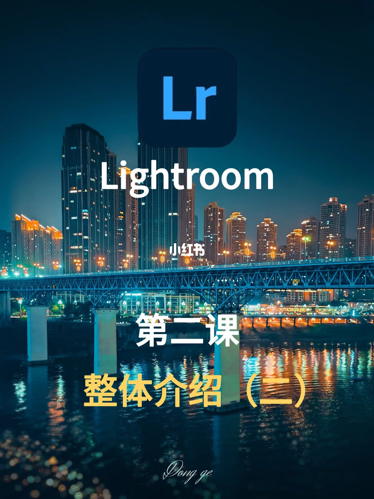
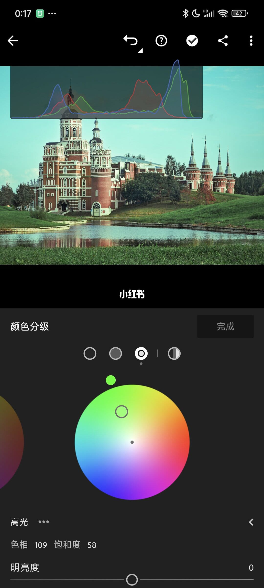
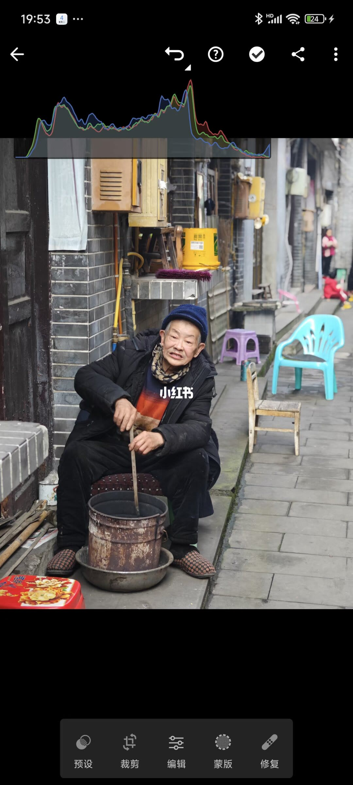
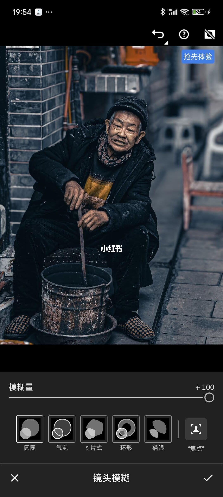
5/13–8/13第5/13页：超实用！Lightroom修图技巧
[种草R]宝子们，继续和大家聊修图技巧，带大家初步认识Lightroom，下期开始细讲每个工具的具体用法，仔仔细细地教大家怎么用。 [种草R]这软件有免费功能，也有付费的。需要全功能免费安装包的，关注➕群获取哦，开始进入正题。 ▶️功能详解： [一R]颜色工具之“分级”：这个功能可以给照片的高光、中间调、阴影、全局分别添加你喜欢的颜色（图片中本身没有的颜色），让照片更有层次感和艺术感。比如说，照片里天空是高光部分，你想让天空带点绿色，就可以在颜色工具里找到分级，在高光部分加上绿色，照片马上就变得不一样了，是不是超有意思。（图2） [二R]模糊工具：这个工具超好用啦，就是ai识别主体，让背景模糊，修出大光圈效果，直接上图吧。（图3、图4） [三R]效果和细节工具：这两个工具主要是处理照片的清晰度、细节问题，像照片模糊，有噪点，就可以用它来解决。看看图5和图6的差别是不是很明显。 [四R]光学工具：这个工具是专门为相机拍的照片准备的，它能帮我们修复镜头畸变。你可以手动选择对应相机的型号配置文件，然后调整参数，照片就变回正常形状啦。它还有个删除色差功能，要是照片里物体
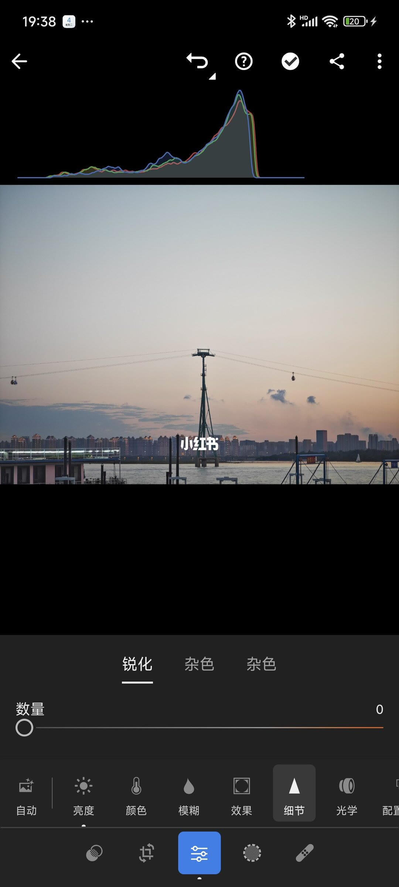
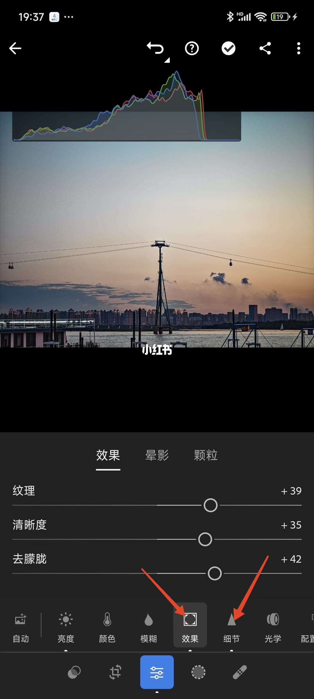
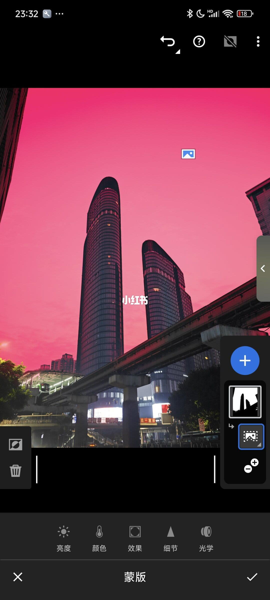
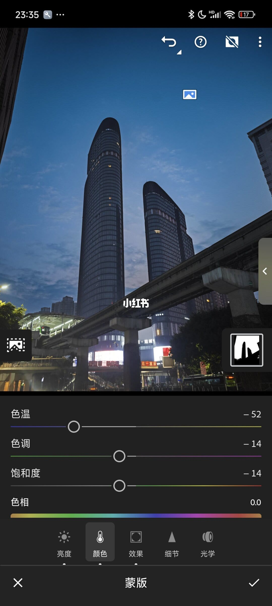
9/13–12/13第9/13页：超实用！Lightroom修图技巧
[种草R]宝子们，继续和大家聊修图技巧，带大家初步认识Lightroom，下期开始细讲每个工具的具体用法，仔仔细细地教大家怎么用。 [种草R]这软件有免费功能，也有付费的。需要全功能免费安装包的，关注➕群获取哦，开始进入正题。 ▶️功能详解： [一R]颜色工具之“分级”：这个功能可以给照片的高光、中间调、阴影、全局分别添加你喜欢的颜色（图片中本身没有的颜色），让照片更有层次感和艺术感。比如说，照片里天空是高光部分，你想让天空带点绿色，就可以在颜色工具里找到分级，在高光部分加上绿色，照片马上就变得不一样了，是不是超有意思。（图2） [二R]模糊工具：这个工具超好用啦，就是ai识别主体，让背景模糊，修出大光圈效果，直接上图吧。（图3、图4） [三R]效果和细节工具：这两个工具主要是处理照片的清晰度、细节问题，像照片模糊，有噪点，就可以用它来解决。看看图5和图6的差别是不是很明显。 [四R]光学工具：这个工具是专门为相机拍的照片准备的，它能帮我们修复镜头畸变。你可以手动选择对应相机的型号配置文件，然后调整参数，照片就变回正常形状啦。它还有个删除色差功能，要是照片里物体
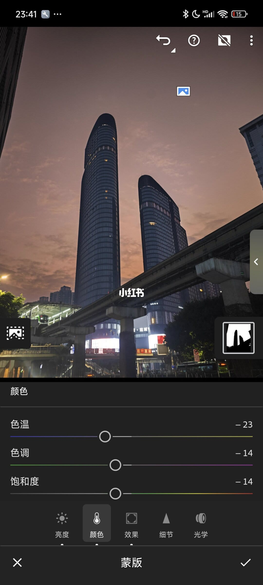
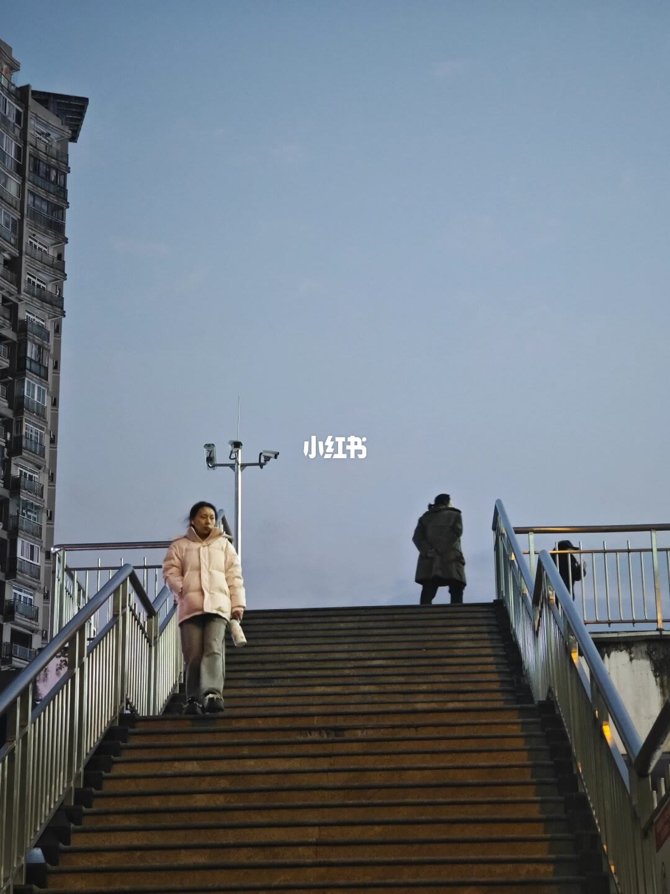
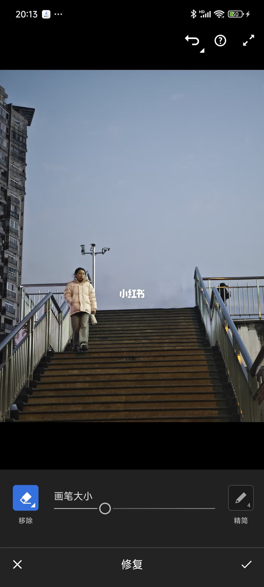
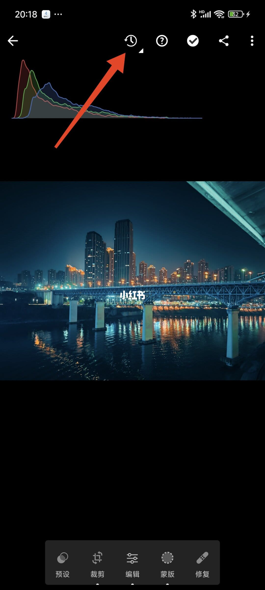
13/13–13/13第13/13页：超实用！Lightroom修图技
[种草R]宝子们，继续和大家聊修图技巧，带大家初步认识Lightroom，下期开始细讲每个工具的具体用法，仔仔细细地教大家怎么用。 [种草R]这软件有免费功能，也有付费的。需要全功能免费安装包的，关注➕群获取哦，开始进入正题。 ▶️功能详解： [一R]颜色工具之“分级”：这个功能可以给照片的高光、中间调、阴影、全局分别添加你喜欢的颜色（图片中本身没有的颜色），让照片更有层次感和艺术感。比如说，照片里天空是高光部分，你想让天空带点绿色，就可以在颜色工具里找到分级，在高光部分加上绿色，照片马上就变得不一样了，是不是超有意思。（图2） [二R]模糊工具：这个工具超好用啦，就是ai识别主体，让背景模糊，修出大光圈效果，直接上图吧。（图3、图4） [三R]效果和细节工具：这两个工具主要是处理照片的清晰度、细节问题，像照片模糊，有噪点，就可以用它来解决。看看图5和图6的差别是不是很明显。 [四R]光学工具：这个工具是专门为相机拍的照片准备的，它能帮我们修复镜头畸变。你可以手动选择对应相机的型号配置文件，然后调整参数，照片就变回正常形状啦。它还有个删除色差功能，要是照片里物体
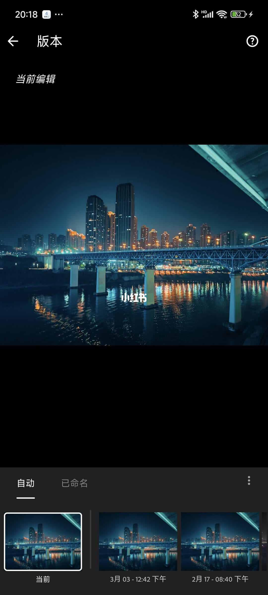
口述/画面要点（13段）
结合 Whisper medium 与画面大字整理；专有名词已校对。
封面/要点：[种草R]宝子们，继续和大家聊修图技巧，带大家初步认识Lightroom，下期开
第2/13页：超实用！Lightroom修图技巧大课堂
第3/13页：超实用！Lightroom修图技巧大课堂
第4/13页：超实用！Lightroom修图技巧大课堂
第5/13页：超实用！Lightroom修图技巧大课堂
第6/13页：超实用！Lightroom修图技巧大课堂
第7/13页：超实用！Lightroom修图技巧大课堂
第8/13页：超实用！Lightroom修图技巧大课堂
第9/13页：超实用！Lightroom修图技巧大课堂
第10/13页：超实用！Lightroom修图技巧大课堂
第11/13页：超实用！Lightroom修图技巧大课堂
第12/13页：超实用！Lightroom修图技巧大课堂
第13/13页：超实用！Lightroom修图技巧大课堂